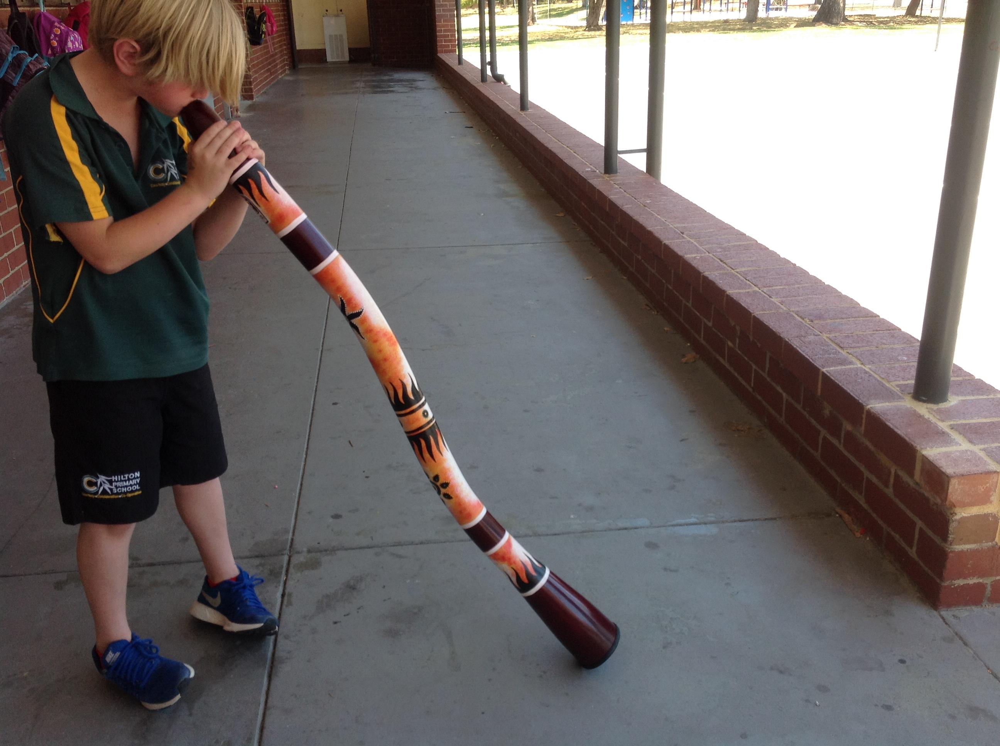

Didgeridoo workshopok

A workshopon megismerkedhetsz a didgeridoo használatával. Kezdőként is kipróbálhatod a hangszert.
Mit lehet tanulni?
- A hangszer helyes tartását
- Az első hang megszólaltatását
- Egyszerű ritmusok gyakorlását
- A körlégzés alapelvét